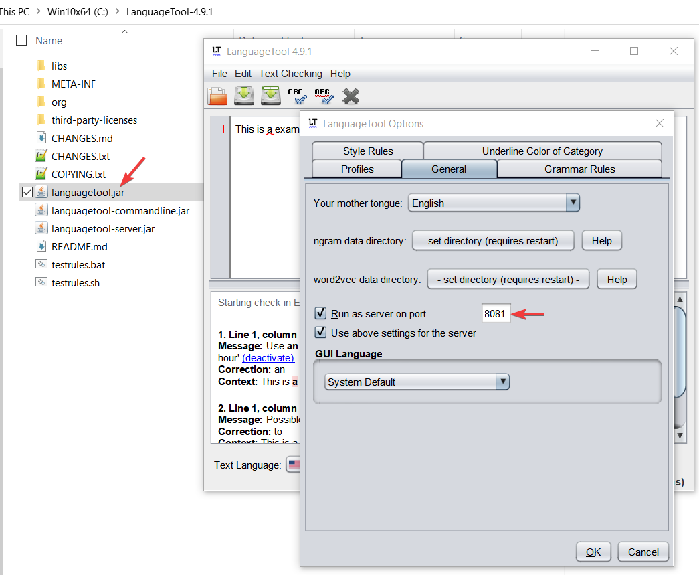
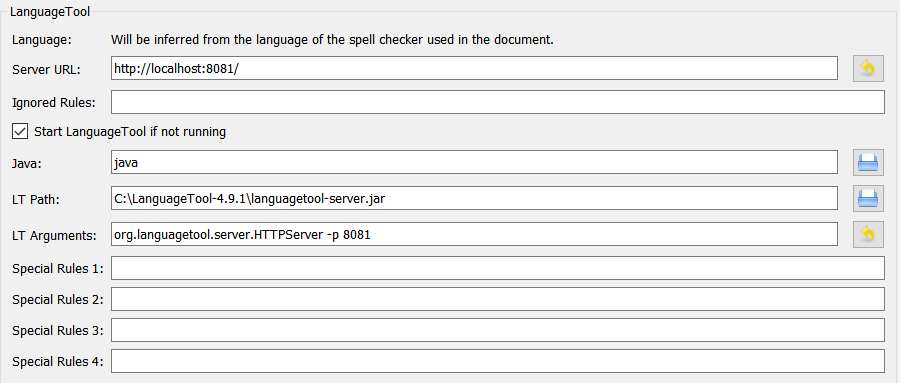
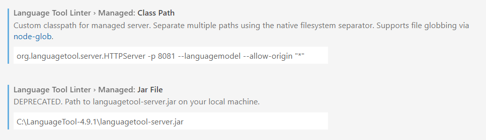
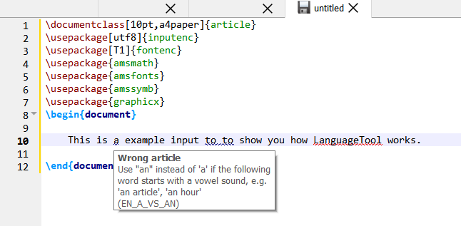

LanguageTool + TeXstudio + VSCode
Introduction
LanguageTool is a proofreading open-source software written in Java that allows you to integrate grammar, and spell checking on several text editors. I use it mainly with TeXstudio for LaTex documents, but when I tried to use in parallel with VSCode, I found some problems.
The objective of this brief tutorial is to configure TeXstudio and VSCode to work with LanguageTool in parallel.
Download and configure LanguageTool
- Download LanguageTool desktop version for offline use.
- Unzip the folder.
- Run
languagetool.jar - In
TexChecking > OptionsenableRun as server on port 8081
Configure TeXstudio
- Go to
Options > Configure TeXstudio > Language Checking - Configure
Server URL,LT Path, andLT Argumentsas follows.  - Maybe you'll find that some users add
--allow-origin "*"toLT Arguments. It's not necessary for TeXstudio because--allow-origin "*"is used to serve from the browser add-on, see official documentation.
Check LanguageTool is activated on TeXstudio
- Go to
Help > Check LanguageTool. TheLT Report.txtwill be opened showingLT current status: working.
Download and configure the LanguageTool Linter VSCode extension
- Download LanguageTool Linter.
- Go to the extesion configuration and set the
Class PathandJar Fileoptions as follows, 
Check LanguageTool is activated on VSCode
- Open the
OUTPUTwindow and select LanguageTool Linter. You will see the following.
- Although I mentioned not to use
--allow-origin "*", we use on VSCode to force LanguageTool to open another port because8081is already used by TeXstudio - A warning message will appear at the bottom to change it the default setting. I tried the suggestion but didn't work for me.
Test the parallel working on VSCode and TeXstudio
- TeXstudio
 - VSCode

Done!. I hope it works for you as well.
Comments
Comments powered by Disqus